V-rep 動態模擬
人物簡化
首先在 onshape 將想要使用的零件圖或組合圖按照圖 1.1 及圖 1.2 匯出成 .stl 檔，再從 v-rep 中開啟 .stl 檔(使用[ File --> Import --> Mash... ])，會出現如圖 1.3 的對話框，依據個人所需去做點選，在按 OK 即可在視窗中導入模型。可以從圖 1.4 中看出，導入的模型是未分離的模型(如若是零件圖則不須此步驟)，所以我們使用[ Edit --> Grouping/Merging --> Divide selected shapes ]來將模型中的物件全都爆開，如圖 1.5。
圖1.1：onshape匯出
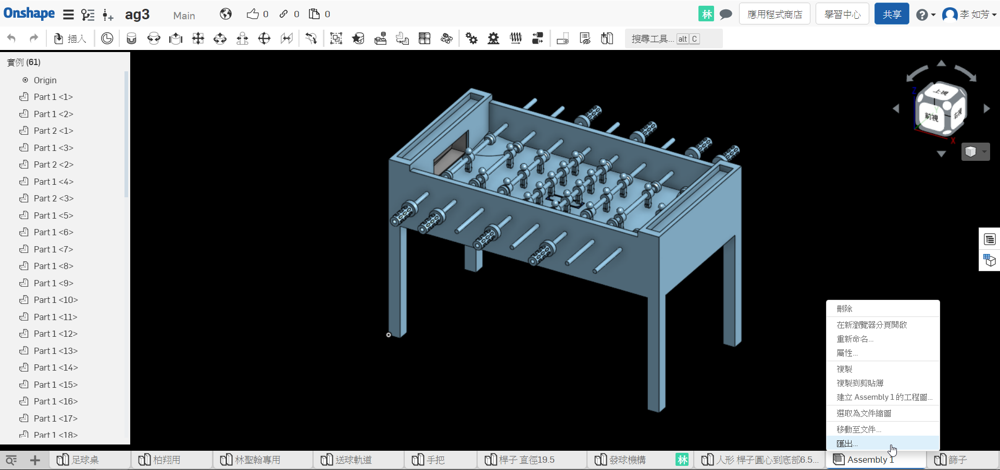
圖1.2：onshape匯出對話框
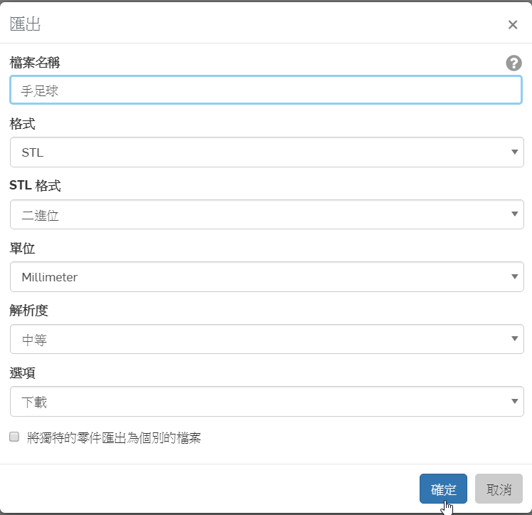
圖1.3：匯入 .STL 檔後的對話框
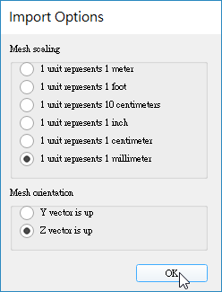
圖1.4：分離模型步驟點選
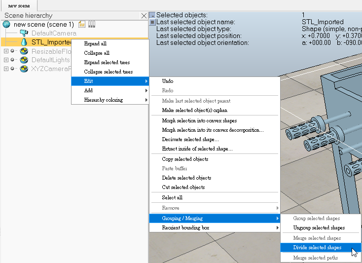
圖1.5：模型爆開後
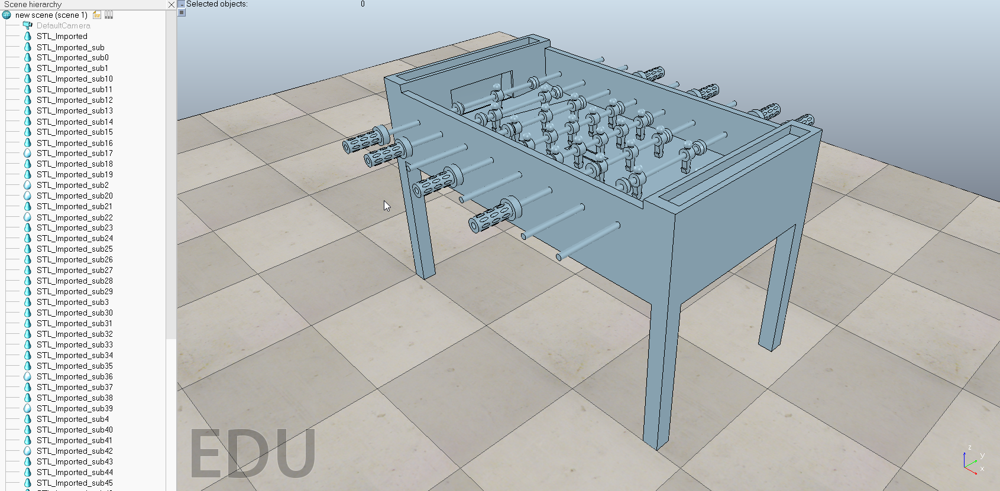
接下來說明人物簡化步驟，先來進行人物頭部的簡化，先選擇人物將其複製(使用[ Edit --> Copy selected Objects ])到一個新建的場景(使用[ File --> New scene ])，再將人物貼上(使用[ Edit --> Paste buffer ])。再點選頁面選擇器工具欄按鈕 ，如圖1.6，使得在簡化的過程中更容易點選，接著選取人物再點選 形狀編輯模式工具欄按鈕 來進行簡化，如圖1.7，在此我框選人物的頭部如圖1.8，再點選簡化的對話框 Operations on selected triangles 中的 Extract cuboid 如圖1.9，之後會出現 Primitive cuboid 的對話框並按下 OK 即會產生一個立方體如圖1.10，頭部的簡化就完成了，再將簡化對話框關閉，此時會出現 Shape edit mode 對話框詢問是否應用這些變化嗎？(點擊否會保
留提取的對象)，所以在這選擇 No 將新加入的物件保留。
圖1.6：頁面選擇器工具欄按鈕
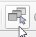
圖1.7：形狀編輯模式工具欄按鈕
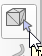
圖1.8：框選人物頭部
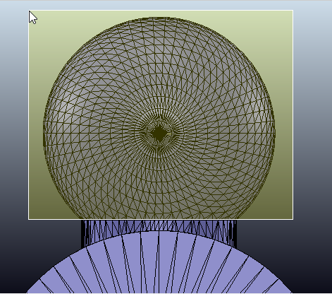
圖1.9：簡化的對話框 - 人物
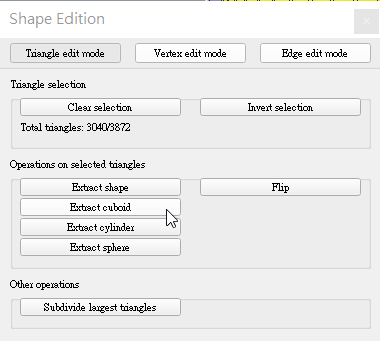
圖1.10：頭部簡化完成後
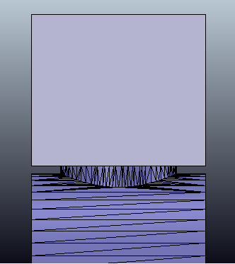
再來要說明人物身體的簡化，其簡化步驟和人物頭部簡化很相似，所以直接跳至身體簡化所需框選的部位如圖1.11，之後再點選簡化的對話框 Operations on selected triangles 中的 Extract cuboid 如圖1.9，身體簡化完的圖片如圖1.12。
圖1.11：框選人物頭部以下的部位
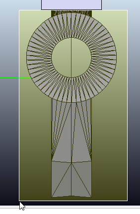
圖1.12：頭部簡化完成後
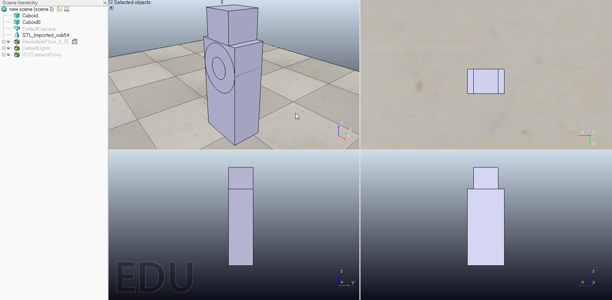
人物的簡化就到這，接著要將兩個新增的物件合併成一個全新的物件，先將兩個物件選取(使用[ Edit --> Grouping/Merging --> Group selected shapes ])，如圖1.13，新物件的名稱為 people_dyn ，之後在剪下貼回第一個場景，如圖1.14。
圖1.13：合併物件
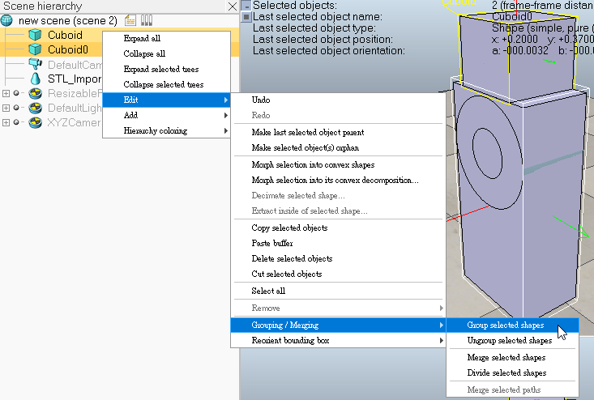
圖1.14：新物件people_dyn新加並貼回原位
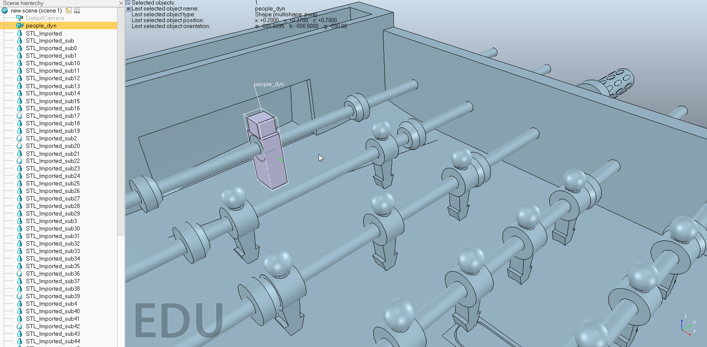
其餘人物的簡化可以使用複製將剛剛簡化後的新物件複製在貼上，如圖1.15，之後點選新貼上的物件使用 Ctrl 在選取其他尚未簡化的一個人物，如圖1.16，點擊操作物件傳送工具欄按鈕 如圖1.17，會出現工具欄按鈕對話框，如圖1.18，點選 Postion 中的 Apply to selection 使新貼上的物件能和為簡化的人物箱貼合，如圖1.19，這樣就無需再簡化無限多次。
!圖1.15：合併物件
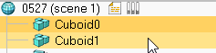
圖1.16：使用ctrl在點擊工具欄按鈕
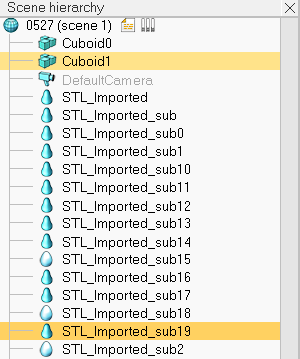
圖1.17：物件傳送工具欄按鈕
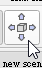
圖1.18：工具欄按鈕對話框
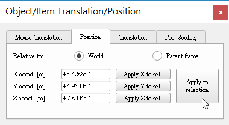
圖1.19：貼完後
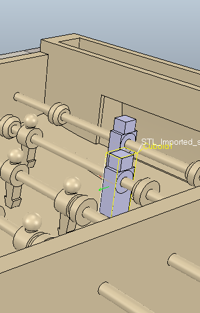
軸、篩子簡化
在來先進行軸的簡化，複製軸到新的場景，選取軸並點選形狀編輯模式工具欄按鈕，如圖1.7，將軸全部框選，如圖2.1，再點選簡化的對話框 Operations on selected triangles 中的 Extract cylinder 如圖2.2，之後會出現 Primitive cylinder 的對話框並按下 OK 即會產生一個圓柱如圖2.3，將新圓柱物件命名為 Cylinder_dyn，並剪下貼回第一場景上即可。
圖2.1：框選軸需簡化的部分
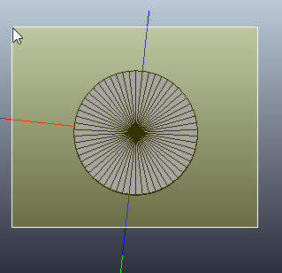
圖2.2：簡化對話框 - 軸
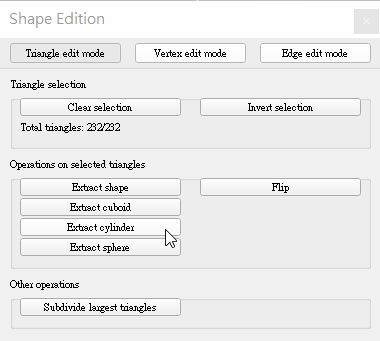
圖2.3：軸簡化後產生的新圓柱
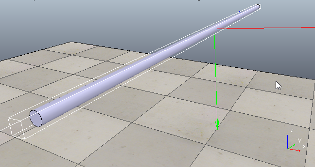
接下來要進行篩子的簡化，複製篩子至新的場景，之後的簡化也和軸非常相似，選取篩子並點選形狀編輯模式工具欄按鈕，將篩子全部框選進行簡化，如圖2.4，再點選簡化的對話框 Operations on selected triangles 中的 Extract cylinder ，之後會出現 Primitive cylinder 的對話框並按下 OK 即會產生一個圓柱如圖2.5，將新圓柱物件命名為 s1_dyn，並剪下貼回第一場景上即可。
圖2.4：框選篩子需簡化部分

圖2.5：篩子簡化後產生的新物件
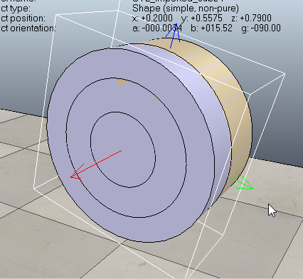
其餘的篩子及軸的簡化，可以參考人物簡化的最後一段。
足球桌簡化
足球桌簡化
---
Toggle shape edit mode(左六)僅對於"一個"物體作簡化形成多個三角形
先開啟另一個New scene，將球桌複製過來做簡化。
球桌長板子有兩種方式，按Toggle shape edit mode後，
1.為選取所想要的平面(可不須全選)，選取四角後按Extract cuboid後(系統會將所選所有三角形自動計算出最大尺寸)。
選取三角形後按Extract cuboid
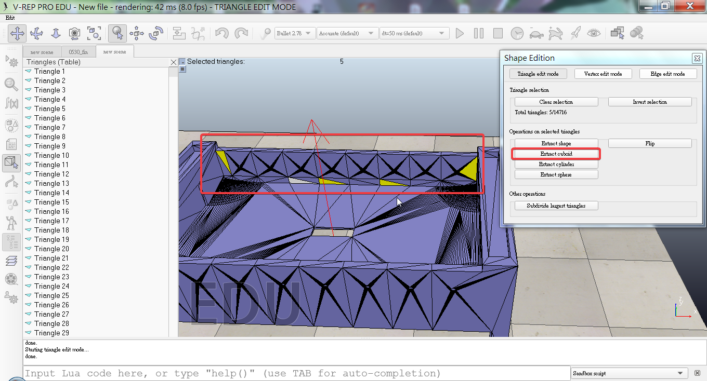
OK
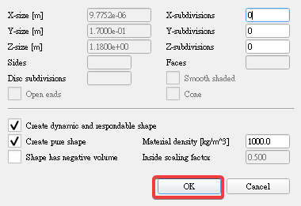
關閉Shape Edition後按 NO
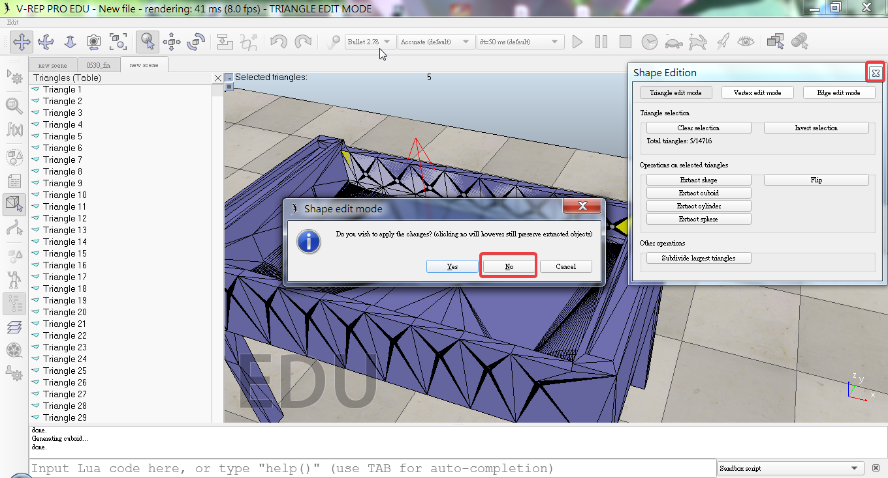
Scene objects properties(左二)>Shape>View/modify geometry>Keep proportions取消勾選，在Bounding box size長厚度後，在Object/item shift(上七)座移動，與球桌對齊。
View/modify geometry
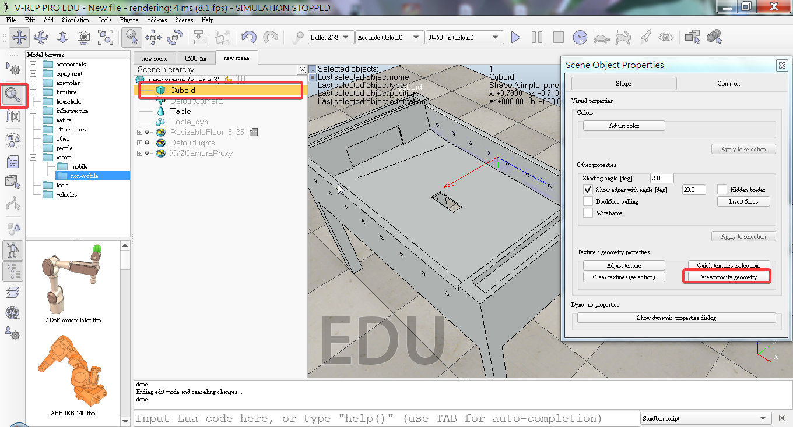
取消勾選並調整板厚
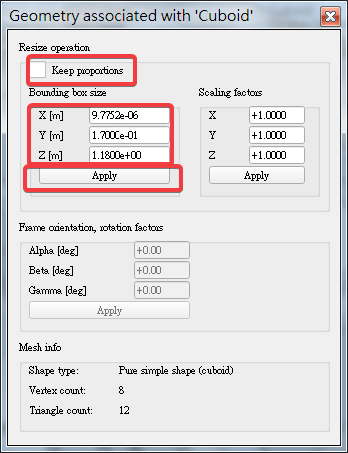
X方向調整
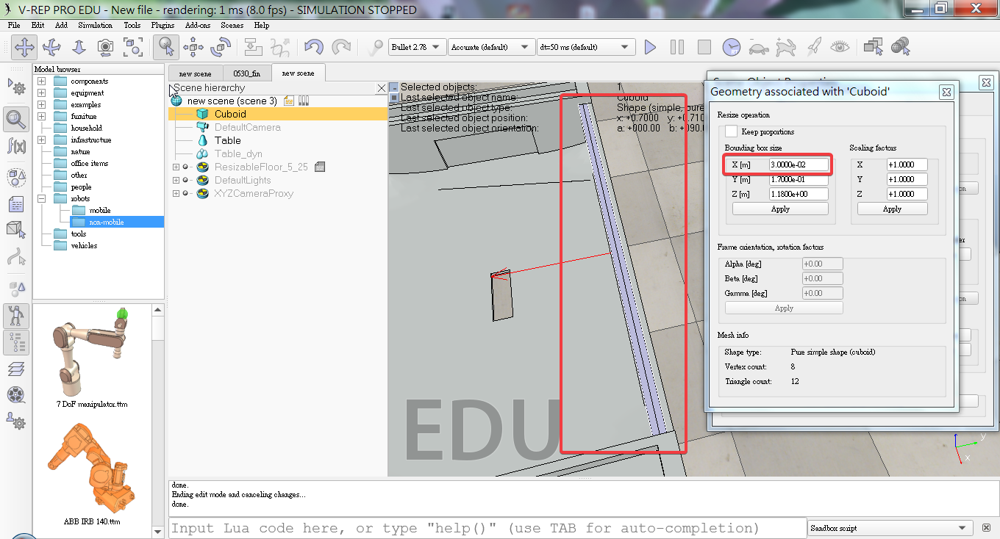
調整位置
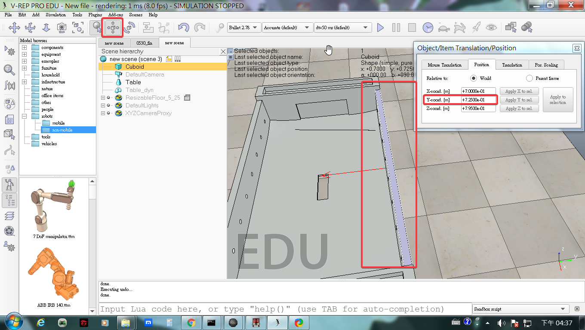
2.為選取所想要的平面(可不須全選)，選取四角後"再選取平面上方三角形(厚度)"Extract cuboid後(系統會將所選所有三角形自動計算出最大尺寸)，就完成了。
多選取板厚的三角形
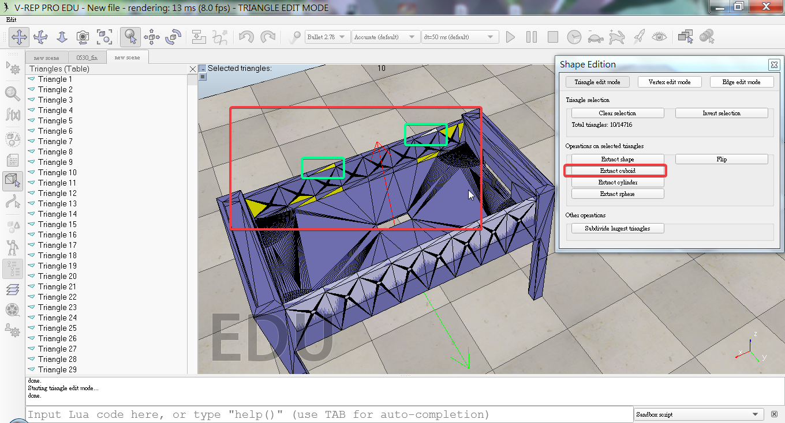
選取完後一樣按Extract cuboid>OK>關閉Shape Edition>NO
兩種方式厚度比較
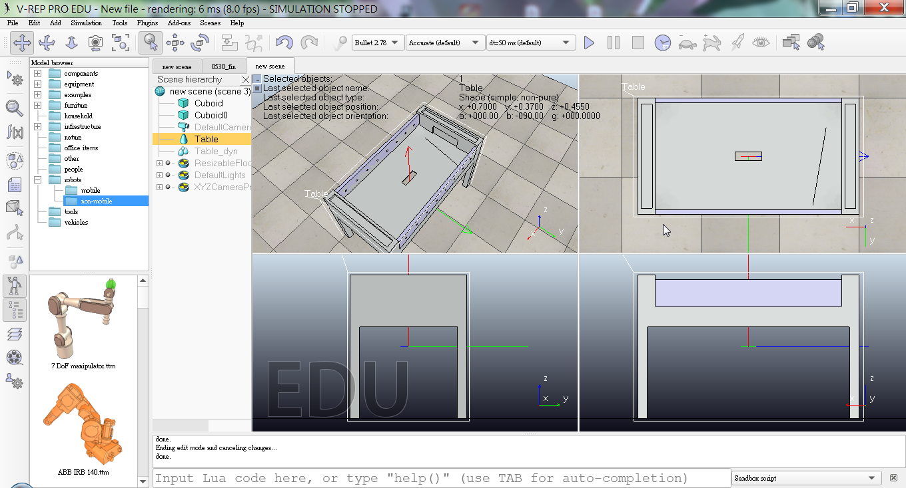
其他地方的板子操作也是如此，之後會發現板子相互干涉，但對模擬或是簡化不會有影響。
簡化後的板子相互干涉
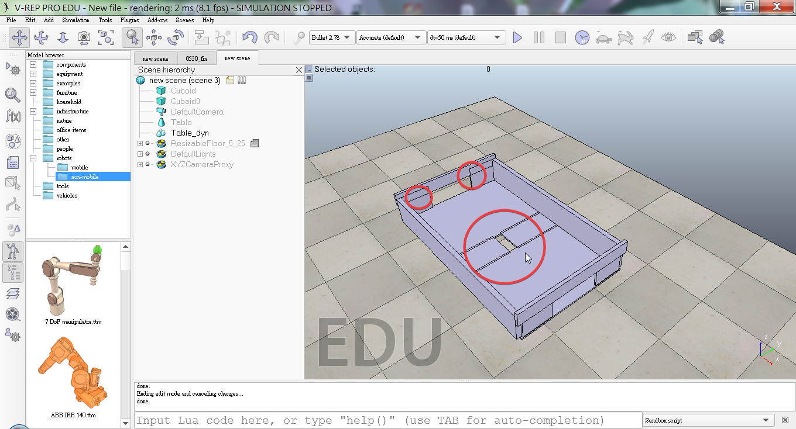
**
Extract shape 為類似像皮膚一樣的一層
Extract cuboid 為長平板
Extract cylinder 為長圓柱
Extract sphere 為長球
模擬步驟
將所有物件都簡化好後，開始進入模擬的步驟，為了在場景層次結構中的物件更好找到，將所有的物件都命名能更快的找的所需要使用的物件。首先先加入平移軸Prismatic joints (使用[Add-->Joint-->Prismatic])及旋轉軸Revolute joints (使用[Add-->Joint-->Revolute])，並分別命名為 Prismatic_joint_1 及 Revolute_joint_1 ，之後將所有我需要用的物件都拉到 Table_dyn 下，如圖4.1及圖4.2。
圖4.1：將所需物件拉入 Table_dyn 下-1
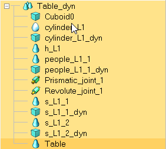
圖4.2：將所需物件拉入 Table_dyn 下-2
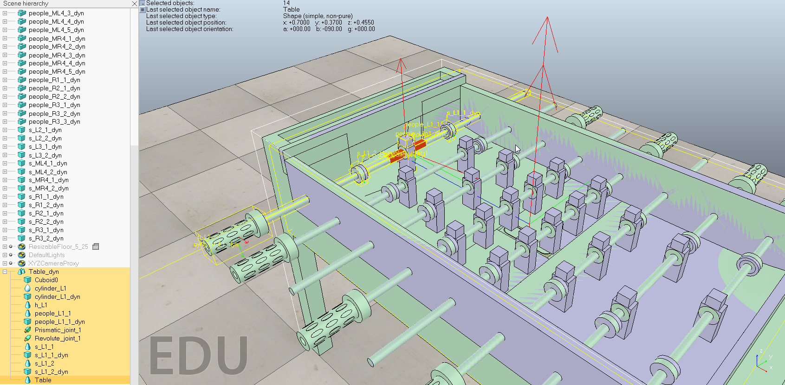
選取 Prismatic_joint_1 (平移軸)及 cylinder_L1_dyn (軸)並點選物件傳送工具欄按鈕如圖x . x，會出現 Object/Item Translation/Position的對話框，切換至 Postion 按下按鈕 Apply to selection ，平移軸及軸會相貼合，如圖4.3，再點選物件旋轉工具欄按鈕圖4.4，會出現 Object/Item Rotation/Orientation的對話框，切換至 Orientation 按下按鈕Apply to selection ，平移軸及軸方向會相同，如圖4.5，之後的旋轉軸也是一樣的方法，圖4.6可以看出平移軸、旋轉軸及軸位置及方向都相同。
圖4.3：平移軸和軸相貼合
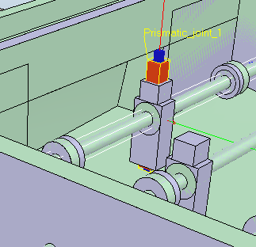
圖4.4：物件旋轉工具欄按鈕][8-1]
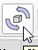
圖4.5：平移軸和軸方向相同
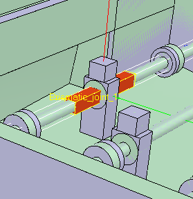
圖4.6：平移軸、旋轉軸及軸位置及方向皆一致
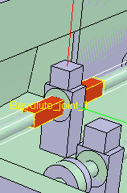
再將拉入 Table_dyn下的物件依照圖4.7 去排序，在選取物件 h_L1、 people_L1_1 、 s_L1_1 及 s_L1_2 (使用[Edit-->Grouping/Merging-->Group selected shapes])將物件合併，命名為 h_L1 ，另一部分的 people_L1_1_dyn 、 s_L1_1_dyn 及 s_L1_2_dyn 也一樣使用相同方法進行合併，命名為 s_L1_2_dyn ，完成後如圖4.8。
圖：4.7樹狀圖排列
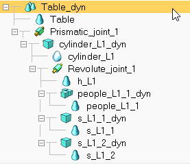
圖4.8：合併並排列好
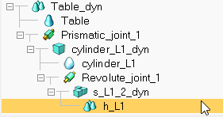
之後點擊兩次 Table_dyn 前的圖案，會產生 Scene Object Properties 點選 common ，將 Visibility 下的 Camera visibility layers 中的勾勾關掉，如圖4.9，將 s_L1_2_dyn 及 cylinder_L1_dyn 也使用相同方式關閉圖層。
圖4.9：Scene Object Properties 對話框
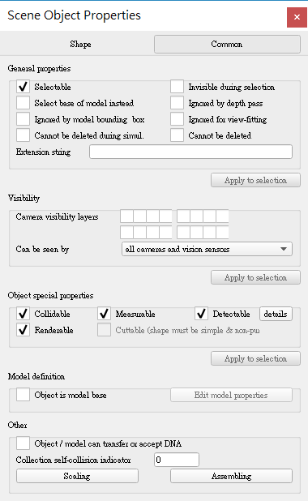
點擊兩次 Table_dyn 前的圖案，並點及對話框中的 Show dynamic properties dialog，會出現另一個 Rigid Body Dynamic Properties 對話框，將 Body is respondable 打勾，再將 Local respondable mask 從第3個勾開始不打勾到第8個，如圖4.10；再來點擊兩次 cylinder_L1_dyn 前的圖案，依照圖4.11去進行勾選，其中打開 Body is dynamic 能使物體產生動態；再點擊兩次 s_L1_2_dyn 前的圖案，依照圖4.12 去進行勾選。
圖4.10：對話框勾選 - Table_dyn
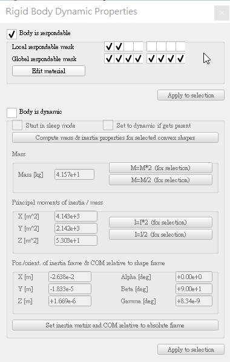
圖4.11：對話框勾選 - cylinder_L1_dyn
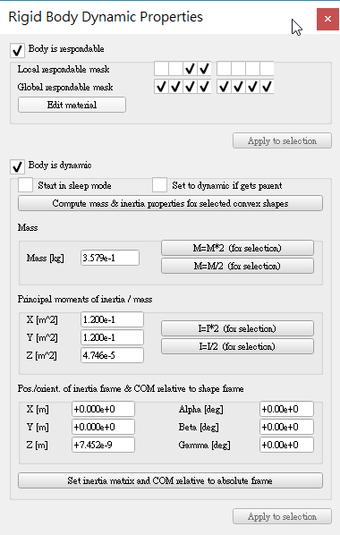
圖4.12：對話框勾選 - s_L1_2_dyn
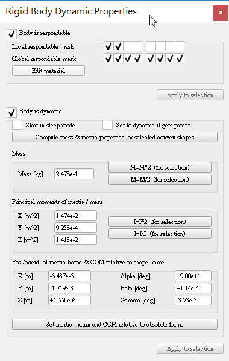
接下來要讓軸能轉動，所以點擊兩次 Prismatic_joint_1 前的圖案，在按下 Show dynamic properties dialog ，會產生 Joint Dynamic Properties 將 Motor properties 下的 Motor enabled 打勾，在 Target velocity 打入0.001，如圖4.13 所展示；再來點擊兩次 Revolute_joint_1 前的圖案，在按下 Show dynamic properties dialog ，會產生 Joint Dynamic Properties 將 Motor properties 下的 Motor enabled 打勾，在 Target velocity 打入1，如圖4.14，最後看圖4.15 可以看到模擬。
圖4.13：對話框勾選 - Prismatic_joint_1
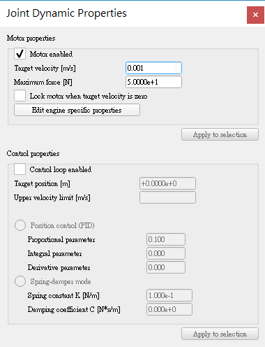
圖4.14：對話框勾選 - Revolute_joint_1
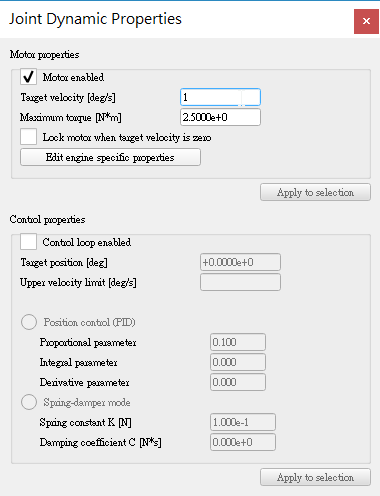
圖4.15：模擬圖
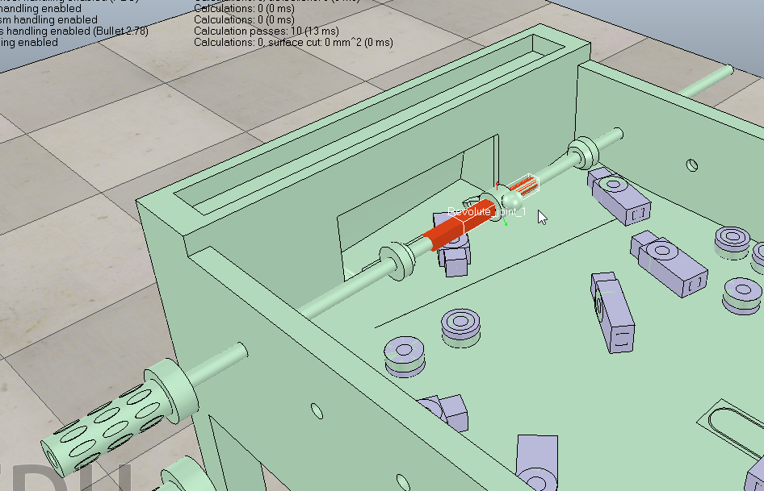
細部設計與 BOM << Previous Next >> V-rep簡化與模擬測試